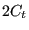
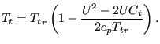
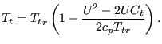
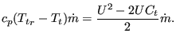
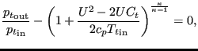
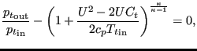

A pump is characterized by a
total head increase versus total flow curve (Figure 121). The total head  is defined by:
is defined by:
|  | (135) |
where  is the vertical elevation,
is the vertical elevation,  is the pressure,
is the pressure,  is the liquid
density and  is the value of the earth acceleration. The total flow
is the liquid
density and  is the value of the earth acceleration. The total flow  satisfies:
satisfies:
|  | (136) |
where  is the mass flow. The pump characteristic can be defined
underneath a *FLUID SECTION,TYPE=LIQUID PUMP by discrete data points on the
curve. The data points should be given in increasing total flow order and the
corresponding total head values must be decreasing. No more than 10 pairs are
allowed. In between the data points
CalculiX performs an interpolation (solid line in Figure
121). For flow values outside the defined range an extrapolation
is performed, the form of which depends on the precise location of the flow
(dashed lines in Figure 121). For positive flow values inferior to the lowest flow data
point, the total head corresponding to this lowest flow data point is taken
(horizontal dashed line). For negative flow
values the total head sharply increases (
) to simulate the
zero-flow conditions of the pump in that region. For flow values exceeding the
largest flow data point the total head decreases sharply with the same tangent
is the mass flow. The pump characteristic can be defined
underneath a *FLUID SECTION,TYPE=LIQUID PUMP by discrete data points on the
curve. The data points should be given in increasing total flow order and the
corresponding total head values must be decreasing. No more than 10 pairs are
allowed. In between the data points
CalculiX performs an interpolation (solid line in Figure
121). For flow values outside the defined range an extrapolation
is performed, the form of which depends on the precise location of the flow
(dashed lines in Figure 121). For positive flow values inferior to the lowest flow data
point, the total head corresponding to this lowest flow data point is taken
(horizontal dashed line). For negative flow
values the total head sharply increases (
) to simulate the
zero-flow conditions of the pump in that region. For flow values exceeding the
largest flow data point the total head decreases sharply with the same tangent  .
.
The gravity acceleration must be specified by a gravity type
*DLOAD card defined for the elements at stake. The material
characteristic  can be defined by a
*DENSITY
card.
can be defined by a
*DENSITY
card.
The liquid is defined by the following parameters (to be specified in that order on the line beneath the *FLUID SECTION, TYPE=LIQUID PUMP card):
Example files: centheat1.